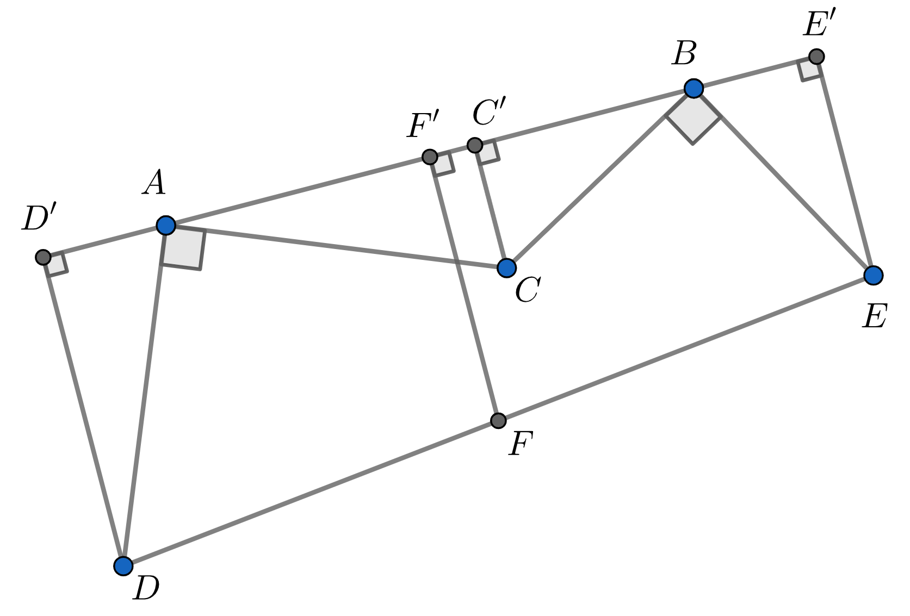

Instructions on a treasure map: "From the tree $C$ walk to the tree $A$, turn $90^\circ$ left and continue the same distance to reach the point $D$. Similarly from $C$ walk to the tree $B$, turn $90^\circ$ right and continue the same distance to reach the point $E$. The treasure is buried at $F$, halfway between $D$ and $E$." You go to the place and find the trees $A, B$ but realize the tree $C$ is gone. Can you still find the treasure?
You can still find the treasure and there can be only one reason why this is possible.

The treasure can be found because the point $F$ is independent of the location of $C$. We offer two different reasonings:
Geometric reasoning. Drop perpendiculars from $C, D, E, F$ to the line $AB$ and call the intersections $C',D',E',F'$. It is easy to see that
$$
\triangle BEE' = \triangle BCC' \quad \text{and} \quad \triangle ADD' = \triangle ACC'.
$$
Hence $AD'=CC'=BE'$. Since $F'$ is the midpoint of $D'E'$, it follows that $F'$ is the midpoint of $AB$. Also,
$$
|FF'| = \frac{|DD'|+|EE'|}{2} = \frac{|AC'|+|C'B|}{2}=\frac{|AB|}{2}.
$$
Thus, $F$ is the point on the bottom part of the perpendicular bisector of $AB$ at a distance $|AB|/2$ from the midpoint of $AB$.
Physical reasoning. We show that moving the point $C$ in any direction will not result in moving the point $F$, so $F$ must be independent of $C$.
Imagine moving $C$ using the displacement vector $\bf v$. Clearly $D$ will displace by the vector $-i {\bf v}$ (which is $90^\circ$ clockwise rotation of $\bf v$) and $E$ will displace by the vector $i {\bf v}$ (which is $90^\circ$ counterclockwise rotation of $\bf v$). Since the two ends of $DE$ experience equal but opposite displacements, the midpoint $F$ must stay put.
 Thus, $F$ is the point on the bottom part of the perpendicular bisector of $AB$ at a distance $|AB|/2$ from the midpoint of $AB$.
Thus, $F$ is the point on the bottom part of the perpendicular bisector of $AB$ at a distance $|AB|/2$ from the midpoint of $AB$.